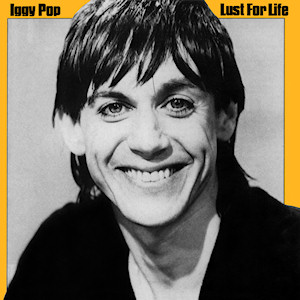

Day 24

Iggy Pop - Success - 1977
买了张朋克专辑，结果最喜欢的歌是里面最不朋克的。我发现这种一唱一和的曲调欢快的歌大多能打在我的好球区里。果然这种充满乡土气息（？）的音乐最受广大人民群众（我）的喜爱啊。
Here comes success (here comes success) Over my hill (over my hill) Here comes success (here comes success) Here comes my car (here comes my car) Here comes my Chinese rug (here comes my Chinese rug) Here comes success (here comes success) yee-ha In the last ditch (in the last ditch) I'll think of you (I'll think of you) In the last ditch (in the last ditch) I will be true (I will be true) Sweetheart, I'm telling you (sweetheart, I'm telling you) Here comes the zoo (here comes the zoo) Here comes success (here comes success) Oh, hoo-ray success (hurray success) (Here comes success, hurray success) Oh, oh success (oh, oh success) I can't help myself ( I can't help myself) I just-just got-to-got-to-got-to (I just-just got-to-got-to-got-to) Can't stand it (got-to, got-to, got-to) Here comes my face (here comes my face) It's plain desire (it's plain desire) Here comes my face (here comes my face) Out of the crowd (out of the crowd) Sweetheart, I'm telling you (sweetheart, I'm telling you) Here comes the zoo (here comes the zoo) In the last ditch (in the last ditch) Here comes success (here comes success) Here comes success (here comes success) I'm gonna do the twist (I'm gonna do the twist) And, oh baby, I'm wiggged (oh baby, I'm wigged) I'm crazy, I'm gonna, I'm gonna go crazy Alright, baby, let's blast off (oh, baby let's blast off) Blast off on success (blast off on success) Oh, you slay me (oh, you slay me, baby) ooh (Oh, you slay me, baby) I'm gonna do the twist (I'm gonna do the twist) I'm gonna hop like a frog (I'm gonna hop like a frog) I'm gonna go out on the street and do anything I want (I'm gonna go out on the street and do anything) Oh, shit (oh, shit)